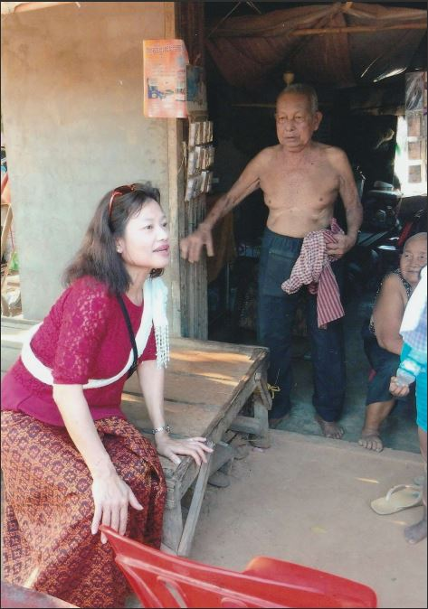

2019年 2月9日 加害者との対面、対話、和解
加害者であるソート村長の生の声
当時の母たちの様子をソート村長本人から
聞き出そうと一生懸命話しかける私ポンナレット

キリングフィールドの入口に立つ私ポンナレット

現地の僧侶に今回の訪問目的を説明する

当時のソート村長の存在や所在を居合わせの村人に聞くポンナレット

母たちはじめ、無念の死を遂げた方々

世界中が平和と笑顔で満ちあふれますように、手を合わせるポンナレット

母たちはじめ、多くの方々がここで尊い命を奪われました

およそ40年ぶりに母たちを抱くことができました

私の姿を母の亡霊でも見たかのように驚く当時のソート村長

当時、連行された母たちの状況をソート村長に確認する

私が書いたクメール語版『虹色の空』をソート村長に手渡す

当時、九死に一生を共にしたトラ兄さんと、ソート村長を囲んで
|
苦しみに堪えて加害者との対面
今年（2019年）の2月、私は何の確信も当てもなく、ある加害者との対面と対話、和解のために10年振りに祖国カンボジアを訪れました。
大変有難く光栄なことですが、今回の旅が実現したのは、女性史研究者の米田佐代子さんが
「第22回女性文化賞」に私を選んで下さったことがきっかけでした。
副賞では、今回の旅に十分すぎるほどの旅費を頂きました。
米田さんは、私が本や講演などを通じて、最も望み、伝えたかった戦争の残酷さ、差別のない世界と平和は全人類の宝であること、
そして、「世界に、憎しみと争いではなく和解と平和を」受け取って下さったのです。
1970年に始まったカンボジア内戦で、私は戦争孤児となり、「大好きな祖国を逃れる難民」となりました。
カンボジアへ帰国した翌日の9日、現地の僧侶に、母たちのキリングフィールド（大量虐殺が行われた刑場跡）を案内していただきました。
私はしばらくそこに立ち尽くした後、地面に身をかがめて「母たちの眠る大地」を抱きました。
44年振りに母たちに直接触れられたような気がします。
その後、偶然にもそこに居合わせた女性に当時の村長の名前を出して尋ねました。
驚いたことに彼女は「その人（村長）なら生きています」というのです。
さっそく彼女に村長の住む家に案内してもらうことにしました。彼の家の前に来たとき、
その姿に私はすぐに「彼だ！」と確信しました。
この日を迎えるにあたり、私は十分に苦しみに堪えてきました。
そして、努めて冷静さを保ちながらも彼に当時の真相を尋ねました。
私は彼の目をまっすぐ見て
「こんにちは。当時、あなたの家の真向かいに住んでいたネンおばあちゃんの生き延びた娘です。覚えていますか」
（この時、村長は私の声と顔を見た瞬間、まるで〈母の亡霊でもみた！〉かのように驚いた顔を見せました）。
あっという間に「来客」のウワサが広がり、大勢の村人も集まってきました。
村長と村人が私の生命力の強さに対して、「よく生き延びたね！」と口を揃えました。
私「当時の新住民の殺害について何か知っていましたか？」
村長「私は何も知らない。当時はこの村で私が一番トップではなく、下っ端の方だった。
私の役目は、新住民を集めただけで殺害に加担していない。命令に背けば私自身も命が危ないから…」
私「私が最後に会った母は当時、病気で歩けないはずです」
村人「当時は（殺害のため連行するとき）係の人が馬車で迎えに来ていたわよ」
村人は聞くに堪えられない真相まで証言してくれました…。
そのあと、持参した著書『虹色の空』のカンボジア語版を村長に手渡ししました。
思えば当時の彼らは非人間的で「体に悪魔の魂が宿った感」さえ覚えました。
今ではすっかりその魂が抜けて、いたって普通の人間の姿に戻っていたのです。
当時と今の姿を比較すると、「人間とは利己的で弱い生きもの」だと教えてもらったような気がします。
何はともあれ、今では履き物さえままならない村長の「質素な暮らしぶり」に、
私はある種の安堵感と「許す気持ち」さえ芽生えました。
別れ際、村人は過去に何もなかったかのように、
「また遊びにいらっしゃい！」と明るく手を振ってくれました。
「もちろん来ますとも。この国は私の生まれ故郷ですから」と、私は空元気で答えました。
|